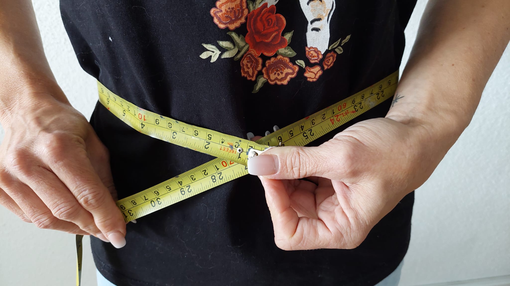

BMI en middelomtrek
BMI
Als je niet zeker weet of je overgewicht hebt, zijn er 2 manieren om daar achter te komen. De eerste is door je BMI te berekenen. BMI staat voor body mass index. De BMI berekent of je een gezond hoeveelheid gewicht hebt vergeleken met de lengte van je lichaam. De BMI wordt bij verschillende leeftijden anders berekend. Daarom zijn de leeftijd grenzen per leeftijd tussen 2-19, 19-65 en 65+. De BMI grenswaarden zijn ook anders bij mannen en vrouwen. De BMI grenswaarden nemen ook toe met leeftijd. Er zijn echter wel uitzonderingen bij BMI. Mensen van een Aziatische achtergrond hebben namelijk een hogere vetmassa dan mensen met een westerse achtergrond. Krachtsporters kunnen er ook buiten vallen omdat ze meer spiermassa hebben en daardoor vaak zwaarder zijn. Dit kan ervoor zorgen dat een hoge BMI hebben zonder echt veel vet te hebben. Zwangere vrouwen kunnen ook lastiger hun BMI berekenen omdat hun lichaamsgewicht en lichaamssamenstelling verandert durende deze periode. Als mensen heel lang of juist heel klein zijn is het BMI berekenen ook lastig. Er is niet bekend vanaf welke lengte het precies geld. Voor de meeste mensen tussen 19-65 jaar geld dat wanneer je BMI lager is dan 18.5 je ondergewicht hebt. Tussen 18.5 en 25 heb je een gezond gewicht. En vanaf 25 tot 30 bezit je overgewicht. Als je 30+ hebt heb je zware overgewicht. Als je BMI uitslag te hoog is wordt je aangeraden om af te vallen.
Middelomtrek
Een andere manier om te weten of je op een goede of te hoge gewicht zit is door je middelomtrek te meten. Dit doe je door rechtop te staan en de meetlint tussen de bovenkant van je bekken en onder de onderste rib te doen. Houd de meetlint niet strak en adem uit zodat je dan je middelomtrek kan lezen. Bij mannen van 19-65 is een gezonde middelomtrek kleiner dan 94 cm. Een verhoogd middelomtrek is tussen de 94-102 cm en een te hoog middelomtrek is vanaf 102 cm en hoger. Bij vrouwen tussen 19-65 geldt dat je gezond bent als je een middelomtrek hebt van kleiner dan 80 cm. Een verhoogd middelomtrek bij 80-88 cm en een te hoog middelomtrek bij 88 cm en hoger. Als je je middelomtrek meet en je BMI berekend zie je dat je meestal dezelfde resultaat krijgt.
